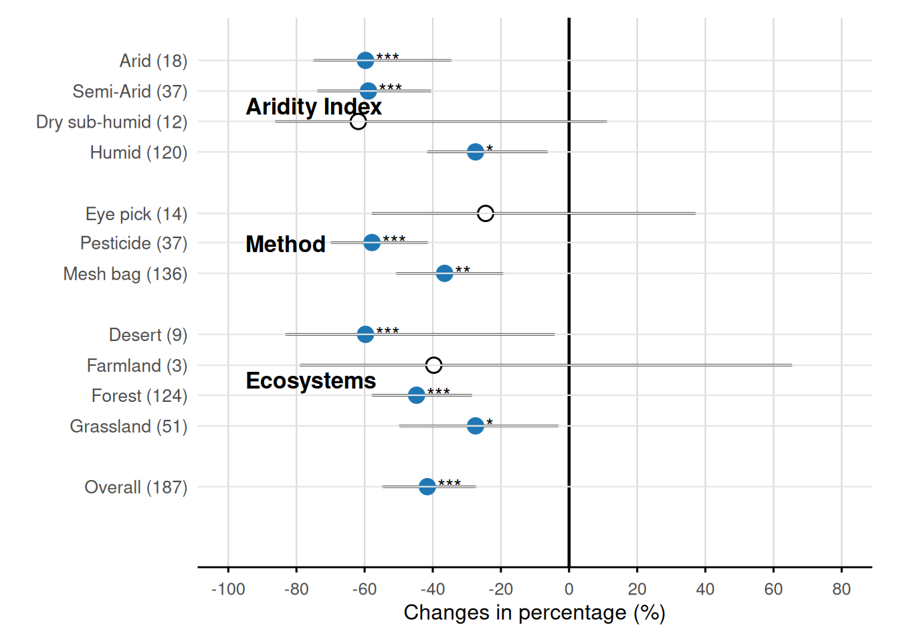

library(ggplot2)
library(dplyr)
# 数据整理
df_data <- data.frame(
subgroup = c("Overall", "Grassland", "Forest", "Farmland", "Desert",
"Mesh bag", "Pesticide", "Eye pick",
"Humid", "Dry sub-humid", "Semi-Arid", "Arid"),
y_pos = c(374.4, 324.5, 299.34, 274.7, 249.36,
199.3, 174.0, 150.1,
99.6, 74.61, 49.6, 24.5),
mean = c(-41.5856, -27.4461, -44.7512, -39.6863, -59.7349,
-36.5207, -57.8355, -24.4916,
-27.4461, -61.8452, -58.8907, -59.7349),
lower = c(-54.66996, -49.81609, -57.83553, -78.93931, -83.16006,
-50.66024, -69.86468, -57.83553,
-41.58562, -86.11459, -73.87440, -74.92959),
upper = c(-27.44608, -3.17674, -28.50127, 65.41055, -4.23193,
-19.42665, -41.58562, 37.13148,
-6.34230, 10.96280, -40.53043, -34.62137),
N = c(187, 51, 124, 3, 9, 136, 37, 14, 120, 12, 37, 18),
sig = c("***", "*", "***", "", "***", "**", "***", "", "*", "", "***", "***"),
effect_type = c("negative", "negative", "negative", "non-signif", "negative",
"negative", "negative", "non-signif",
"negative", "non-signif", "negative", "negative")
)
df_data$label <- paste0(df_data$subgroup, " (", df_data$N, ")")
df_data <- df_data %>% arrange(desc(y_pos))
group_annotations <- data.frame(
label = c("Ecosystems", "Method", "Aridity Index"),
y = c(287, 175, 62),
x = -95
)
p <- ggplot(df_data, aes(y = y_pos)) +
geom_errorbarh(aes(xmin = lower, xmax = upper), height = 1.2, color = "black", linewidth = 0.6) +
geom_point(aes(x = mean, fill = effect_type, color = effect_type), shape = 21, size = 3.5, stroke = 0.8) +
geom_text(aes(x = mean + 3, label = sig), hjust = 0, vjust = 0.5, size = 4, color = "black") +
geom_vline(xintercept = 0, linetype = "solid", color = "black", linewidth = 0.8) +
geom_hline(yintercept = df_data$y_pos, color = "gray90", linewidth = 0.4) +
annotate("text", x = group_annotations$x, y = group_annotations$y,
label = group_annotations$label, hjust = 0, vjust = 0.5,
fontface = "bold", size = 4.5, color = "black") +
scale_y_reverse(breaks = df_data$y_pos, labels = df_data$label) +
scale_x_continuous(breaks = seq(-100, 80, by = 20), limits = c(-100, 80)) +
scale_fill_manual(values = c("negative" = "#1f77b4", "non-signif" = "white")) +
scale_color_manual(values = c("negative" = "#1f77b4", "non-signif" = "black")) +
labs(x = "Changes in percentage (%)", y = NULL) +
theme_minimal(base_size = 12) +
theme(panel.grid.major.x = element_line(color = "gray85", linewidth = 0.4),
panel.grid.major.y = element_blank(), panel.grid.minor = element_blank(),
axis.line.x = element_line(color = "black", linewidth = 0.5),
axis.ticks.x = element_line(color = "black"),
axis.text.y = element_text(size = 10, hjust = 1, margin = margin(r = 5)),
plot.margin = margin(10, 15, 10, 20),
panel.background = element_rect(fill = "white", color = NA)) +
guides(fill = "none", color = "none") +
coord_cartesian(xlim = c(-100, 80), ylim = c(420, 10), clip = "off")
print(p)